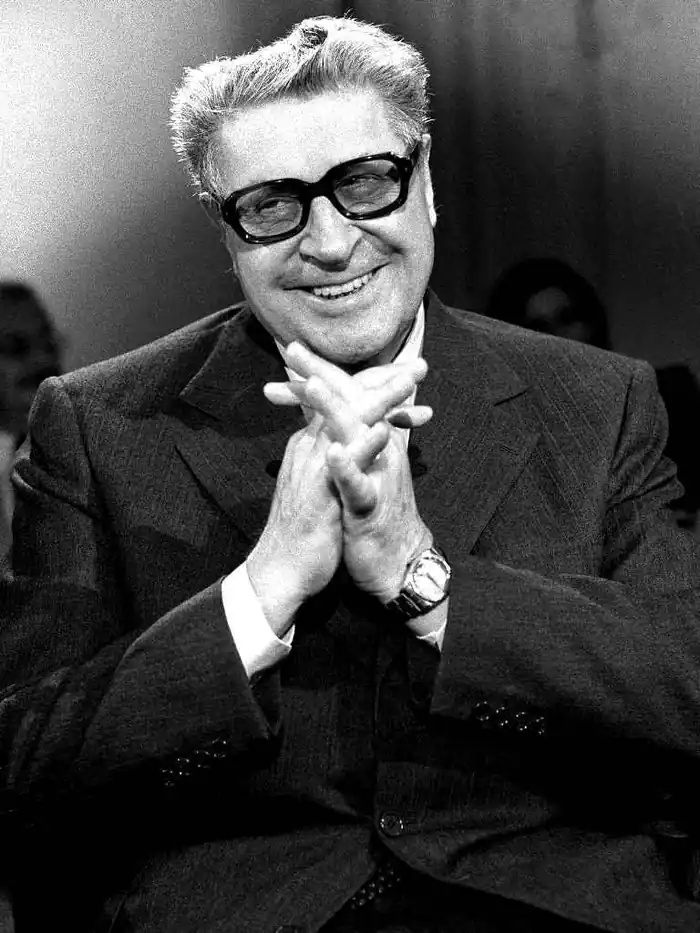
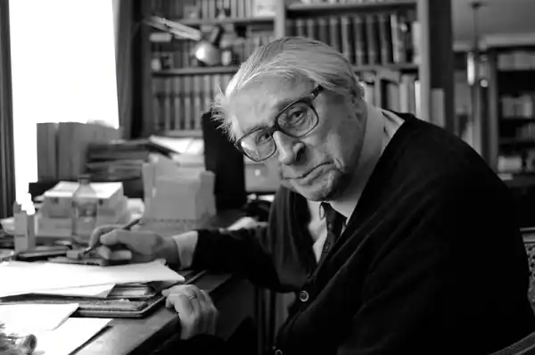

Анрі Труайя (ім'я при народженні Лев Асланович Тарасов) — французький письменник, член Французької академії, лауреат численних літературних премій, автор понад сотні томів історичних і художніх творів — народився 1 листопада (19 жовтня за юліанським календарем) 1911 року в Москві в багатій вірменської купецької сім'ї Аслана і Лідії Тарасових.
Труайя був молодшим із трьох дітей: сестра Ольга була старша за нього на дев'ять років, брат Олександр — на чотири роки.
Після Жовтневої соціалістичної революції сім'я Тарасових бігла до Кисловодська, в фамільний маєток "Карс", а потім з Новоросійська вирушила до Константинополя. Однак висаджуватися в порту міста дозволялося тільки біженцям-вірменам, а у них були російські паспорти. З Туреччини Тарасові-Торосян і поїхали до Франції й оселилася в Парижі, де Анрі у восьмирічному віці вступив до ліцею Луї Пастера, після здобув вищу юридичну освіту. Повернувшись з армії в 1935, пішов служити в бюджетний відділ поліцейської префектури департаменту Сена (для цього Труайя довелося прийняти французьке громадянство), щоб заробити собі на життя, і одночасно писав ночами. Перший роман "Брехливий світло" був опублікований в тому ж 1935. Видавець роману повідомив Труайя, що "не в його інтересах випускати книгу під іноземною прізвищем: прочитавши на обкладинці" Лев Тарасов ", читач прийме її за перекладну", і настійно рекомендував придумати псевдонім . У 1938 за роман "Павук" Анрі Труайя був удостоєний Гонкурівської премії. За своє життя Анрі Труайя написав близько 100 томів літературних творів. У 1945, отримавши від онука барона Геккерна-Дантеса копії його двох листів від початку 1836 року до Луї Геккерну, використовував їх під час написання книги про Пушкіна. У травні 1959 був обраний членом Французької академії. У 1985 за пропозицією Анрі Труайя його друг, французький режисер Анрі Верней, вірменин за національністю, написав збірку оповідань "Майрік". Згодом цей збірник ліг в основу сценаріїв фільмів "Майрік" і "Вулиця Параді, будинок 588", в яких Вірніше на прикладі своєї сім'ї розповідає про геноцид вірмен і життя діаспори. Анрі Труайя помер 2 березня 2007 року в Парижі. Нагороди: Кавалер Великого хреста ордена Почесного легіону Командор Національного ордена заслуг Командор ордена мистецтв і літератури Лауреат Гонкурівської премії Анрі Труайя за свою 95-річну життя написав безліч творів. Його перу належить ряд біографій відомих французьких особистостей. Їм були написані романи, присвячені видатним французьким романістам: Гі де Мопассаном, Емілю Золя, Гюставові Флоберу. Твори: 1920 — "Син сатрапа", биографическо-історичний роман 1935 — "Брехливий світло", роман (назва в іншому перекладі — "Фальшивий день") ( "Faux Jour") 1935 — "Мережі", роман ( "Le Vivier") 1938 — "Павук", роман ( "L'Araigne") — Гонкурівську премію 1938 — "Загальна могила", збірка оповідань 1938 (1941?) — "Суд божий", збірка оповідань ( "Le Jugement de Dieu") 1938 — "Замковий ключ", повість (назва в іншому перекладі — "Ключ зводу"). 1938 (?) — "Пан Сітрін", повість 1940 — "Достоєвський", романізована біографія 1940 — "Жюдит Мадре", роман 1942 — "Мертвий вистачає живого", роман ( "Le mort saisit le vif") 1945 — "Від філантропії до Рудої", збірка оповідань ( "Du Philanthrope à la Rouquine") 1946 — "Пушкін", романізована біографія 1947-1950 — "Поки стоїть земля", трилогія ( "Tant que la terre durera") (в неї входять романи "Поки стоїть земля" (1947), "лахміття і попіл" ( "Le Sac et la Cendre") (1948 ), "Чужі на землі" ( "Étrangers sur la terre") (1950)). 1950 — "Сніг в жалобі", роман 1951 — "Голова на плечах", роман ( "La Tête sur les épaules") 1952 — "Надзвичайна доля Лермонтова", романізована біографія ( "L'Étrange Destin de Lermontov") 1953-1958 — "Сівба та жнива", пенталогия ( "Les Semailles et les Moissons") 1959 — "Повсякденне життя в Росії за часів останнього царя", історичне дослідження ( "La Vie quotidienne en Russie au temps du dernier tsar") 1959-1962 — "Світло праведних" ( "La Lumière des justes"), пенталогия про декабристів (в неї входять романи "Братство червоних маків" ( "Les Compagnons du Coquelicot") (1959), "Бариня" ( "La Barynia" (1960), "Слава переможеним" ( "La Gloire des vaincus") (1961), "Сибірські жінки" ( "Les Dames de Sibérie") (1962), "Софія, або Кінець боротьби" ( "Sophie ou la Fin des combats ") (1963?)). 1964 — "Жест Єви", збірка оповідань ( "Le Geste d'Ève") 1965 — "Толстой", романізована біографія 1965-1967 — "Сім'я Еглетьер", трилогія (в неї входять романи "Сім'я Еглетьер" ( "Les Eygletière") (1965), "Голод левенят" ( "La Faim des lionceaux") (1966), "Крах" ( " La Malandre ") (1967) 1966 — "Крила диявола", збірник (складається з раніше написаних і перероблених оповідань) 1971 — "Микола Гоголь" 1973 — "Анн здай", роман ( "Anne Prédaille") 1974-1975 — "Москвич", трилогія (в неї входять романи "Москвич", "Таємні переживання", "Ранкові вогні") 1976 — "Моя настільки довга дорога", мемуари 1977 — "Катерина Велика" 1977 — "Знехтувавши справи земні", роман 1979 — "Петро Великий" 1981 — "Олександр I. Північний сфінкс" 1982 — "Іван Грозний" 1982 — "в'юшки", повість 1984 — "Антон Чехов" 1984 — "Марія Карпівна" 1985 — "Тургенєв" 1986 — "Горький" 1988 — "Гюстав Флобер" 1989 — "Гі де Мопассан" 1990 — "Олександр II" ( "Alexandre II, le tsar libérateur") 1991 — "Микола II" ( "Nicolas II, le dernier tsar") 1992 — "Еміль Золя" 1993 — "Поль Верлен" 1994 — "Бодлер" 1995 — "Оноре де Бальзак" Рік випуску 1996 — "Григорій Распутін" 1998 — "Грізні цариці" ( "Terribles tsarines") 1999 — "Микола I" 2000 — "Балерина з Санкт-Петербурга" 2001 — "Марина Цвєтаєва" ( "Marina Tsvetaena: L'éternelle insurgée") 2002 — "Павло I" 2004 — "Баронеса і музикант" 2004 — "Олександр III" 2006 — "Олександр Дюма" 2006 — "Борис Пастернак" 2006 — "Полювання", роман ( "La Traque") 2008 — "Борис Годунов" (посмертне видання) 2010 — "Три матері, три сина" 2012 — "Гончаров"